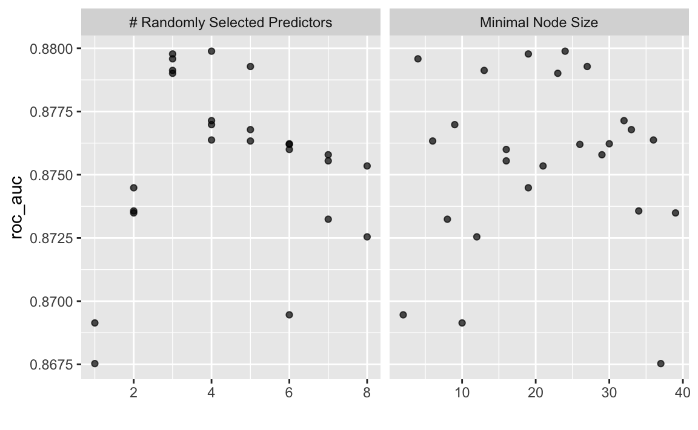

library(tidyverse) # data wrangling
library(tidymodels) # modelling
library(broom) # tidy model output
library(skimr) # overview on descriptives
library(parallel) # multiple cores -- unix onlyPredicting the survival in the Titanic disaster. We’ll be using a tidymodels approach.
cores <- parallel::detectCores()
cores
#> [1] 8prepare_data <- function(traindata_url = "https://raw.githubusercontent.com/sebastiansauer/Statistiklehre/main/data/titanic/train.csv",
testdata_url = "https://raw.githubusercontent.com/sebastiansauer/Statistiklehre/main/data/titanic/test.csv") {
# import the data:
train <- read_csv(traindata_url)
test <- read_csv(testdata_url)
# bind both samples into one:
data_raw <-
train %>%
bind_rows(test)
# drop unused variables:
data <-
data_raw %>%
select(-c(Name, Cabin, Ticket))
# convert string to factors:
data2 <-
data %>%
mutate(across(where(is.character), as.factor))
# convert numeric outcome to nominal, to indicate classification:
data2 <- data2 %>%
mutate(Survived = as.factor(Survived))
return(data2)
}data2 <- prepare_data()split_titanic <- initial_time_split(data = data2, prop = 891/1309)
train <- training(split_titanic)
test <- testing(split_titanic)
titanic_recipe <-
# define model formula:
recipe(Survived ~ ., data = train) %>%
# Use "ID" etc as ID, not as predictor:
update_role(PassengerId, new_role = "ID") %>%
# impute missing values:
step_knnimpute(all_predictors(), neighbors = 3) %>%
# convert character and factor type variables into dummy variables:
step_dummy(all_nominal(), -all_outcomes()) %>%
# exclude near zero variance predictors:
step_nzv(all_predictors()) %>%
# exclude highly correlated vars:
step_corr(all_predictors()) %>%
# center (set mean to zero):
step_center(all_predictors(), -all_outcomes()) %>%
# set sd=1
step_scale(all_predictors(), -all_outcomes()) rf_mod2 <-
rand_forest(mtry = tune(),
min_n = tune(),
trees = 1000) %>%
set_engine("ranger",
num.threads = cores) %>%
set_mode("classification")train_cv <- vfold_cv(train, v = 10)titanic_rf_wf2 <-
workflow() %>%
add_model(rf_mod2) %>%
add_recipe(titanic_recipe)set.seed(42)
t1 <- Sys.time()
rf_res2 <-
titanic_rf_wf2 %>%
tune_grid(resamples = train_cv,
grid = 25,
control = control_grid(save_pred = TRUE),
metrics = metric_set(roc_auc))
t2 <- Sys.time()
t2 - t1
#> Time difference of 1.722152 minsIt may be worthwhile to save the result object to disk, in order to save computation time:
saveRDS(rf_res2, file = "rf_res2.rds")rf_res2 %>%
collect_metrics()
#> # A tibble: 25 x 8
#> mtry min_n .metric .estimator mean n std_err .config
#> <int> <int> <chr> <chr> <dbl> <int> <dbl> <chr>
#> 1 4 9 roc_auc binary 0.877 10 0.0103 Preprocessor1_Model01
#> 2 3 13 roc_auc binary 0.879 10 0.0101 Preprocessor1_Model02
#> 3 6 30 roc_auc binary 0.876 10 0.00962 Preprocessor1_Model03
#> 4 6 26 roc_auc binary 0.876 10 0.00986 Preprocessor1_Model04
#> 5 6 2 roc_auc binary 0.869 10 0.0119 Preprocessor1_Model05
#> 6 3 23 roc_auc binary 0.879 10 0.0102 Preprocessor1_Model06
#> 7 5 6 roc_auc binary 0.876 10 0.0113 Preprocessor1_Model07
#> 8 2 39 roc_auc binary 0.873 10 0.0116 Preprocessor1_Model08
#> 9 1 10 roc_auc binary 0.869 10 0.0115 Preprocessor1_Model09
#> 10 1 37 roc_auc binary 0.868 10 0.0107 Preprocessor1_Model10
#> # … with 15 more rowsrf_res2 %>%
show_best(metric = "roc_auc")
#> # A tibble: 5 x 8
#> mtry min_n .metric .estimator mean n std_err .config
#> <int> <int> <chr> <chr> <dbl> <int> <dbl> <chr>
#> 1 4 24 roc_auc binary 0.880 10 0.00956 Preprocessor1_Model19
#> 2 3 19 roc_auc binary 0.880 10 0.0102 Preprocessor1_Model18
#> 3 3 4 roc_auc binary 0.880 10 0.0102 Preprocessor1_Model11
#> 4 5 27 roc_auc binary 0.879 10 0.00993 Preprocessor1_Model14
#> 5 3 13 roc_auc binary 0.879 10 0.0101 Preprocessor1_Model02autoplot(rf_res2)
rf_best2 <-
rf_res2 %>%
select_best(metric = "roc_auc")
rf_best2
#> # A tibble: 1 x 3
#> mtry min_n .config
#> <int> <int> <chr>
#> 1 4 24 Preprocessor1_Model19rf_final_wf2 <-
titanic_rf_wf2 %>%
finalize_workflow(rf_best2)So, here is the best model:
rf_final_wf2
#> ══ Workflow ════════════════════════════════════════════════════════════════════
#> Preprocessor: Recipe
#> Model: rand_forest()
#>
#> ── Preprocessor ────────────────────────────────────────────────────────────────
#> 6 Recipe Steps
#>
#> ● step_knnimpute()
#> ● step_dummy()
#> ● step_nzv()
#> ● step_corr()
#> ● step_center()
#> ● step_scale()
#>
#> ── Model ───────────────────────────────────────────────────────────────────────
#> Random Forest Model Specification (classification)
#>
#> Main Arguments:
#> mtry = 4
#> trees = 1000
#> min_n = 24
#>
#> Engine-Specific Arguments:
#> num.threads = cores
#>
#> Computational engine: rangerLet us fit this model to the train data:
last_rf_mod2 <-
rf_final_wf2 %>%
fit(data = train)last_rf_mod2
#> ══ Workflow [trained] ══════════════════════════════════════════════════════════
#> Preprocessor: Recipe
#> Model: rand_forest()
#>
#> ── Preprocessor ────────────────────────────────────────────────────────────────
#> 6 Recipe Steps
#>
#> ● step_knnimpute()
#> ● step_dummy()
#> ● step_nzv()
#> ● step_corr()
#> ● step_center()
#> ● step_scale()
#>
#> ── Model ───────────────────────────────────────────────────────────────────────
#> Ranger result
#>
#> Call:
#> ranger::ranger(x = maybe_data_frame(x), y = y, mtry = min_cols(~4L, x), num.trees = ~1000, min.node.size = min_rows(~24L, x), num.threads = ~cores, verbose = FALSE, seed = sample.int(10^5, 1), probability = TRUE)
#>
#> Type: Probability estimation
#> Number of trees: 1000
#> Sample size: 891
#> Number of independent variables: 8
#> Mtry: 4
#> Target node size: 24
#> Variable importance mode: none
#> Splitrule: gini
#> OOB prediction error (Brier s.): 0.1260803set.seed(42)
last_rf_fit2 <-
last_rf_mod2 %>%
last_fit(split_titanic)rf2_preds <-
last_rf_fit2 %>%
collect_predictions() %>%
select(-Survived) %>%
select(PassengerID = .row, Survived = .pred_class) glimpse(rf2_preds)
#> Rows: 418
#> Columns: 2
#> $ PassengerID <int> 892, 893, 894, 895, 896, 897, 898, 899, 900, 901, 902, 90…
#> $ Survived <fct> 0, 0, 0, 0, 1, 0, 0, 0, 1, 0, 0, 0, 1, 0, 1, 1, 0, 0, 0, …rf2_preds %>%
write_csv(file = "titanic-rf2.csv")#> ─ Session info ───────────────────────────────────────────────────────────────────────────────────────────────────────
#> setting value
#> version R version 4.0.2 (2020-06-22)
#> os macOS Catalina 10.15.7
#> system x86_64, darwin17.0
#> ui X11
#> language (EN)
#> collate en_US.UTF-8
#> ctype en_US.UTF-8
#> tz Europe/Berlin
#> date 2020-12-14
#>
#> ─ Packages ───────────────────────────────────────────────────────────────────────────────────────────────────────────
#> package * version date lib source
#> assertthat 0.2.1 2019-03-21 [1] CRAN (R 4.0.0)
#> backports 1.2.0 2020-11-02 [1] CRAN (R 4.0.2)
#> blogdown 0.21 2020-10-11 [1] CRAN (R 4.0.2)
#> bookdown 0.21 2020-10-13 [1] CRAN (R 4.0.2)
#> broom 0.7.2 2020-10-20 [1] CRAN (R 4.0.2)
#> callr 3.5.1 2020-10-13 [1] CRAN (R 4.0.2)
#> cellranger 1.1.0 2016-07-27 [1] CRAN (R 4.0.0)
#> cli 2.2.0 2020-11-20 [1] CRAN (R 4.0.2)
#> codetools 0.2-16 2018-12-24 [2] CRAN (R 4.0.2)
#> colorspace 2.0-0 2020-11-11 [1] CRAN (R 4.0.2)
#> crayon 1.3.4 2017-09-16 [1] CRAN (R 4.0.0)
#> DBI 1.1.0 2019-12-15 [1] CRAN (R 4.0.0)
#> dbplyr 2.0.0 2020-11-03 [1] CRAN (R 4.0.2)
#> desc 1.2.0 2018-05-01 [1] CRAN (R 4.0.0)
#> devtools 2.3.2 2020-09-18 [1] CRAN (R 4.0.2)
#> digest 0.6.27 2020-10-24 [1] CRAN (R 4.0.2)
#> dplyr * 1.0.2 2020-08-18 [1] CRAN (R 4.0.2)
#> ellipsis 0.3.1 2020-05-15 [1] CRAN (R 4.0.0)
#> evaluate 0.14 2019-05-28 [1] CRAN (R 4.0.0)
#> fansi 0.4.1 2020-01-08 [1] CRAN (R 4.0.0)
#> forcats * 0.5.0 2020-03-01 [1] CRAN (R 4.0.0)
#> fs 1.5.0 2020-07-31 [1] CRAN (R 4.0.2)
#> generics 0.1.0 2020-10-31 [1] CRAN (R 4.0.2)
#> ggplot2 * 3.3.2 2020-06-19 [1] CRAN (R 4.0.0)
#> glue 1.4.2 2020-08-27 [1] CRAN (R 4.0.2)
#> gtable 0.3.0 2019-03-25 [1] CRAN (R 4.0.0)
#> haven 2.3.1 2020-06-01 [1] CRAN (R 4.0.0)
#> hms 0.5.3 2020-01-08 [1] CRAN (R 4.0.0)
#> htmltools 0.5.0 2020-06-16 [1] CRAN (R 4.0.0)
#> httr 1.4.2 2020-07-20 [1] CRAN (R 4.0.2)
#> jsonlite 1.7.1 2020-09-07 [1] CRAN (R 4.0.2)
#> knitr 1.30 2020-09-22 [1] CRAN (R 4.0.2)
#> lifecycle 0.2.0 2020-03-06 [1] CRAN (R 4.0.0)
#> lubridate 1.7.9.2 2020-11-13 [1] CRAN (R 4.0.2)
#> magrittr 2.0.1 2020-11-17 [1] CRAN (R 4.0.2)
#> memoise 1.1.0 2017-04-21 [1] CRAN (R 4.0.0)
#> modelr 0.1.8 2020-05-19 [1] CRAN (R 4.0.0)
#> munsell 0.5.0 2018-06-12 [1] CRAN (R 4.0.0)
#> pillar 1.4.7 2020-11-20 [1] CRAN (R 4.0.2)
#> pkgbuild 1.1.0 2020-07-13 [1] CRAN (R 4.0.2)
#> pkgconfig 2.0.3 2019-09-22 [1] CRAN (R 4.0.0)
#> pkgload 1.1.0 2020-05-29 [1] CRAN (R 4.0.0)
#> prettyunits 1.1.1 2020-01-24 [1] CRAN (R 4.0.0)
#> processx 3.4.5 2020-11-30 [1] CRAN (R 4.0.2)
#> ps 1.4.0 2020-10-07 [1] CRAN (R 4.0.2)
#> purrr * 0.3.4 2020-04-17 [1] CRAN (R 4.0.0)
#> R6 2.5.0 2020-10-28 [1] CRAN (R 4.0.2)
#> Rcpp 1.0.5 2020-07-06 [1] CRAN (R 4.0.2)
#> readr * 1.4.0 2020-10-05 [1] CRAN (R 4.0.2)
#> readxl 1.3.1 2019-03-13 [1] CRAN (R 4.0.0)
#> remotes 2.2.0 2020-07-21 [1] CRAN (R 4.0.2)
#> reprex 0.3.0 2019-05-16 [1] CRAN (R 4.0.0)
#> rlang 0.4.9 2020-11-26 [1] CRAN (R 4.0.2)
#> rmarkdown 2.5 2020-10-21 [1] CRAN (R 4.0.2)
#> rprojroot 2.0.2 2020-11-15 [1] CRAN (R 4.0.2)
#> rstudioapi 0.13.0-9000 2020-12-09 [1] Github (rstudio/rstudioapi@4baeb39)
#> rvest 0.3.6 2020-07-25 [1] CRAN (R 4.0.2)
#> scales 1.1.1 2020-05-11 [1] CRAN (R 4.0.0)
#> sessioninfo 1.1.1 2018-11-05 [1] CRAN (R 4.0.0)
#> stringi 1.5.3 2020-09-09 [1] CRAN (R 4.0.2)
#> stringr * 1.4.0 2019-02-10 [1] CRAN (R 4.0.0)
#> testthat 3.0.0 2020-10-31 [1] CRAN (R 4.0.2)
#> tibble * 3.0.4 2020-10-12 [1] CRAN (R 4.0.2)
#> tidyr * 1.1.2 2020-08-27 [1] CRAN (R 4.0.2)
#> tidyselect 1.1.0 2020-05-11 [1] CRAN (R 4.0.0)
#> tidyverse * 1.3.0 2019-11-21 [1] CRAN (R 4.0.0)
#> usethis 1.6.3 2020-09-17 [1] CRAN (R 4.0.2)
#> vctrs 0.3.5 2020-11-17 [1] CRAN (R 4.0.2)
#> withr 2.3.0 2020-09-22 [1] CRAN (R 4.0.2)
#> xfun 0.19 2020-10-30 [1] CRAN (R 4.0.2)
#> xml2 1.3.2 2020-04-23 [1] CRAN (R 4.0.0)
#> yaml 2.2.1 2020-02-01 [1] CRAN (R 4.0.0)
#>
#> [1] /Users/sebastiansaueruser/Rlibs
#> [2] /Library/Frameworks/R.framework/Versions/4.0/Resources/library